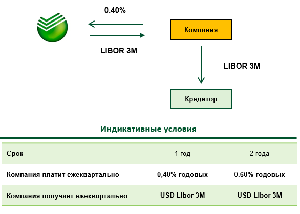
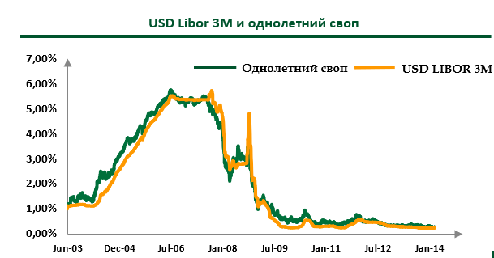
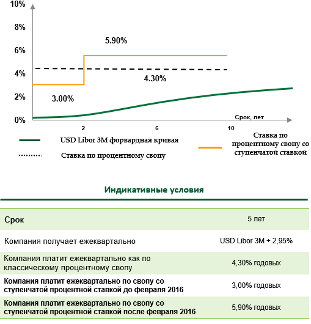

Процентный риск
Риск негативного изменения процентных ставок ведет к повышению стоимости заимствования
Инструменты:
-
Процентный своп – позволяет заменить одни процентные платежи другими, например перейти от фиксированной ставке к плавающей, также позволяет изменить периодичность платежей.
- Возможность снизить процентные выплаты
- Позволяет защититься от роста плавающей ставки
- График платежей может быть полностью синхронизирован с графиком выплат по кредиту
-
Опцион Cap на процентную ставку - позволяет нивелировать риск роста плавающей процентной ставки выше определенного уровня - страйка опциона.
- Инструмент позволяет участвовать в снижении плавающей процентной ставки
-
Стратегия процентный Collar определяет коридор, в пределах которого может колебаться процентная ставка.
- Риск роста процентной ставки выше определенного уровня полностью исключен
- Инструмент позволяет участвовать в благоприятном снижении ставки до уровня участия
- Возможность подобрать страйки таким образом, чтобы премия по стратегии была нулевой
Комбинированный риск
Риск негативного изменения и валютного курса, и процентных ставок
Инструменты:
-
Валютно-процентный своп – позволяет Компании изменить валюту долгового финансирования и тип процентной ставки (например, плавающая ставка в рублях трансформируется в фиксированную ставку в другой валюте).
- Возможность скорректировать дисбаланс существующей валютной структуры активов/пассивов Компании
- При переходе из более слабой валюты в более крепкую валюту (например, из рубля в доллар США) снижается номинальная процентная ставка
- Стоимость «синтетического» валютного финансирования, как правило, ниже по сравнению с альтернативными вариантами привлечения средств в валюте
-
Валютно-процентный своп с барьером - позволяет Компании изменить валюту долгового финансирования (из USD в RUB) и тип процентной ставки.
- Возможность скорректировать дисбаланс существующей валютной структуры активов/пассивов Компании
- Более привлекательные условия по сравнению с простым валютно-процентным свопом
-
Бивалютный кредит – позволяет снизить стоимость долгового финансирования, предоставляя банку право конвертировать валюту кредита при достижении заранее определенного уровня валютного курса.
- Процентная ставка по бивалютному кредиту существенно ниже ставки по простому кредиту.
- Номинал кредита в базовой и альтернативной валютах, уровни Барьер и Страйк определены заранее
- Риск существенного роста обменного курса ограничен.
Процентный Своп IRS (Interest Rate Swap)
Описание инструмента
Процентный своп - предусматривает обмен процентными платежами между Компанией и Банком, позволяет трансформировать плавающую ставку по кредиту в фиксированную и наоборот, а также изменить периодичность платежей (например, трансформировать платежи из квартальных в годовые)
Особенности
- График платежей по свопу может быть полностью синхронизирован с графиком процентных платежей по кредиту
- Процентная ставка определяется в день сделки и не меняется в зависимости от колебаний рынка
Преимущества
- Своп в фиксированную ставку – полная защита от роста ставки
- Ставка, зафиксированная через своп, может быть ниже фиксированной ставки по обычному кредиту
- Рынок рублевых свопов позволяет зафиксировать стоимость заимствований на сроке до 10 лет
Ограничения
- Своп в фиксированную ставку исключает возможность участия в снижении плавающей ставки
Механизм платежей по кредиту
 Процентный своп со ступенчатой ставкой
Описание инструмента
Процентный своп со ступенчатой ставкой предусматривает обмен процентными платежами между Компанией и Банком, позволяет трансформировать плавающую ставку по кредиту в фиксированную ставку с разными уровнями для разных периодов действия
Особенности
- Срок действия свопа делится на несколько периодов, в течение которых действуют разные уровни фиксированной ставки
- График платежей по свопу полностью синхронизируется с графиком процентных платежей по кредиту
- Процентные ставки определяются в день сделки и не меняются в зависимости от колебаний рынка
- Возможно деление срока свопа на любое количество периодов
Преимущества
- Ставки, зафиксированные через своп на ближние периоды, могут быть установлены ниже значений обычной фиксированной ставки
- Своп в фиксированную ставку – полная защита от роста ставки
- Возможность ребалансировки процентных расходов в соответствии с ожидаемыми доходами клиента / проекта
- Возможность «фиксирования» ставок на сроки короче срока действия кредитов (удобно, когда клиент планирует досрочно гасить / рефинансировать кредит)
- Продукт удобен для досрочного погашения кредита или рефинансирования кредита
Ограничения
- Своп исключает возможность участия в снижении плавающей ставки (действует как фиксированная ставка по кредиту)
Механизм платежей по свопу
Опцион Cap на процентную ставку
Описание инструмента
Опцион Cap - позволяет нивелировать риск роста плавающей процентной ставки выше определенного уровня - страйка опциона. В случае, если в дату исполнения опциона плавающая ставка выше страйка, Компания получает компенсацию в размере превышения ставкой страйка опциона применительно к номиналу сделки
Особенности
- Покупка опциона Cap предусматривает выплату опционной премии (в % годовых единовременно или равномерно по мере уплаты процентных платежей)
- Премия опциона зависит от страйка, текущего значения процентной ставки, волатильности процентных ставок, срока исполнения
Преимущества
- Полная защита от роста ставки выше определенного уровня - страйка
- Инструмент позволяет участвовать в снижении плавающей процентной ставки
Ограничения
- Непокрытые расходы в случае, если опцион не исполняется или если выплата по опциону меньше опционной премии. Однако потери ограничены величиной опционной премии